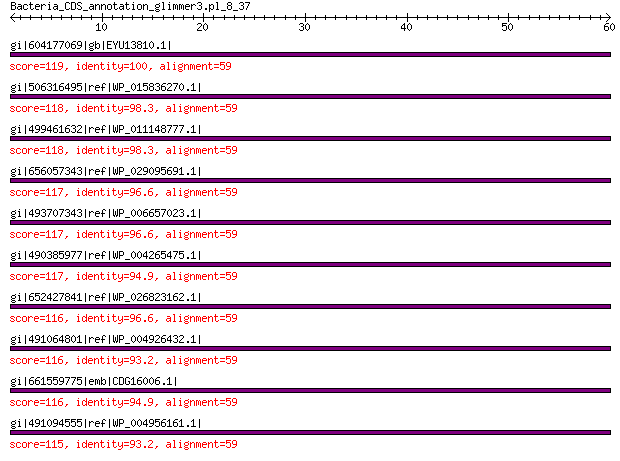

bitscore colors: <40, 40-50 , 50-80, 80-200, >200
 BLASTP 2.2.31+
Reference: Stephen F. Altschul, Thomas L. Madden, Alejandro A.
Schaffer, Jinghui Zhang, Zheng Zhang, Webb Miller, and David J.
Lipman (1997), "Gapped BLAST and PSI-BLAST: a new generation of
protein database search programs", Nucleic Acids Res. 25:3389-3402.
Reference for composition-based statistics: Alejandro A. Schaffer,
L. Aravind, Thomas L. Madden, Sergei Shavirin, John L. Spouge, Yuri
I. Wolf, Eugene V. Koonin, and Stephen F. Altschul (2001),
"Improving the accuracy of PSI-BLAST protein database searches with
composition-based statistics and other refinements", Nucleic Acids
Res. 29:2994-3005.
Database: All non-redundant GenBank CDS translations+PDB+SwissProt+PIR+PRF
excluding environmental samples from WGS projects
49,011,213 sequences; 17,563,301,199 total letters
Query= Bacteria_CDS_annotation_glimmer3.pl_8_37
Length=59
Score E
Sequences producing significant alignments: (Bits) Value
gi|604177069|gb|EYU13810.1| LSU ribosomal protein L30P 119 3e-33
gi|506316495|ref|WP_015836270.1| 50S ribosomal protein L30 118 5e-33
gi|499461632|ref|WP_011148777.1| MULTISPECIES: 50S ribosomal pro... 118 5e-33
gi|656057343|ref|WP_029095691.1| 50S ribosomal protein L30 117 8e-33
gi|493707343|ref|WP_006657023.1| 50S ribosomal protein L30 117 8e-33
gi|490385977|ref|WP_004265475.1| MULTISPECIES: 50S ribosomal pro... 117 1e-32
gi|652427841|ref|WP_026823162.1| 50S ribosomal protein L30 116 2e-32
gi|491064801|ref|WP_004926432.1| 50S ribosomal protein L30 116 2e-32
gi|661559775|emb|CDG16006.1| 50S ribosomal protein L30 116 3e-32
gi|491094555|ref|WP_004956161.1| MULTISPECIES: 50S ribosomal pro... 115 4e-32
>gi|604177069|gb|EYU13810.1| LSU ribosomal protein L30P [Photorhabdus luminescens BA1]
Length=61
Score = 119 bits (297), Expect = 3e-33, Method: Compositional matrix adjust.
Identities = 59/59 (100%), Positives = 59/59 (100%), Gaps = 0/59 (0%)
Query 1 MAKTIKITQIRSSIGRLPKHKATLVGLGLRRIGHTVEREDTPAIRGMINLVSYMVKVEE 59
MAKTIKITQIRSSIGRLPKHKATLVGLGLRRIGHTVEREDTPAIRGMINLVSYMVKVEE
Sbjct 3 MAKTIKITQIRSSIGRLPKHKATLVGLGLRRIGHTVEREDTPAIRGMINLVSYMVKVEE 61
>gi|506316495|ref|WP_015836270.1| 50S ribosomal protein L30 [Photorhabdus asymbiotica]
gi|253991671|ref|YP_003043027.1| 50S ribosomal subunit protein L30 [Photorhabdus asymbiotica]
gi|253783121|emb|CAQ86286.1| 50S ribosomal subunit protein L30 [Photorhabdus asymbiotica]
gi|550875209|gb|ERT14242.1| 50S ribosomal protein L30 [Photorhabdus temperata J3]
gi|572731309|gb|ETS29498.1| LSU ribosomal protein L30P [Photorhabdus temperata subsp. khanii
NC19]
gi|662546840|gb|KER01478.1| LSU ribosomal protein L30P [Photorhabdus temperata subsp. temperata
Meg1]
Length=61
Score = 118 bits (296), Expect = 5e-33, Method: Compositional matrix adjust.
Identities = 58/59 (98%), Positives = 59/59 (100%), Gaps = 0/59 (0%)
Query 1 MAKTIKITQIRSSIGRLPKHKATLVGLGLRRIGHTVEREDTPAIRGMINLVSYMVKVEE 59
MAKTIK+TQIRSSIGRLPKHKATLVGLGLRRIGHTVEREDTPAIRGMINLVSYMVKVEE
Sbjct 3 MAKTIKVTQIRSSIGRLPKHKATLVGLGLRRIGHTVEREDTPAIRGMINLVSYMVKVEE 61
>gi|499461632|ref|WP_011148777.1| MULTISPECIES: 50S ribosomal protein L30 [Photorhabdus]
gi|37528525|ref|NP_931870.1| 50S ribosomal protein L30 [Photorhabdus luminescens subsp. laumondii
TTO1]
gi|81572238|sp|Q7MYG9.1|RL30_PHOLL RecName: Full=50S ribosomal protein L30 [Photorhabdus luminescens
subsp. laumondii TTO1]
gi|36787963|emb|CAE17080.1| 50S ribosomal protein L30 [Photorhabdus luminescens subsp. laumondii
TTO1]
gi|530711203|gb|EQC02064.1| 50S ribosomal protein L30 [Photorhabdus temperata subsp. temperata
M1021]
Length=59
Score = 118 bits (295), Expect = 5e-33, Method: Compositional matrix adjust.
Identities = 58/59 (98%), Positives = 59/59 (100%), Gaps = 0/59 (0%)
Query 1 MAKTIKITQIRSSIGRLPKHKATLVGLGLRRIGHTVEREDTPAIRGMINLVSYMVKVEE 59
MAKTIK+TQIRSSIGRLPKHKATLVGLGLRRIGHTVEREDTPAIRGMINLVSYMVKVEE
Sbjct 1 MAKTIKVTQIRSSIGRLPKHKATLVGLGLRRIGHTVEREDTPAIRGMINLVSYMVKVEE 59
>gi|656057343|ref|WP_029095691.1| 50S ribosomal protein L30 [Budvicia aquatica]
Length=59
Score = 117 bits (294), Expect = 8e-33, Method: Compositional matrix adjust.
Identities = 57/59 (97%), Positives = 59/59 (100%), Gaps = 0/59 (0%)
Query 1 MAKTIKITQIRSSIGRLPKHKATLVGLGLRRIGHTVEREDTPAIRGMINLVSYMVKVEE 59
MAKTIK+TQIRSSIGRLPKHKATLVGLGLRRIGHTVEREDTPA+RGMINLVSYMVKVEE
Sbjct 1 MAKTIKVTQIRSSIGRLPKHKATLVGLGLRRIGHTVEREDTPAVRGMINLVSYMVKVEE 59
>gi|493707343|ref|WP_006657023.1| 50S ribosomal protein L30 [Providencia alcalifaciens]
gi|212688365|gb|EEB47893.1| ribosomal protein L30 [Providencia alcalifaciens DSM 30120]
gi|414100344|gb|EKT61963.1| 50S ribosomal protein L30 [Providencia alcalifaciens Dmel2]
gi|573498058|gb|ETS98600.1| ribosomal protein L30 [Providencia alcalifaciens PAL-3]
gi|573506360|gb|ETT06547.1| ribosomal protein L30 [Providencia alcalifaciens F90-2004]
gi|577056691|gb|EUC94166.1| ribosomal protein L30 [Providencia alcalifaciens PAL-2]
gi|577064555|gb|EUD01471.1| ribosomal protein L30 [Providencia alcalifaciens PAL-1]
gi|577067710|gb|EUD04449.1| ribosomal protein L30 [Providencia alcalifaciens RIMD 1656011]
gi|577069184|gb|EUD05765.1| ribosomal protein L30 [Providencia alcalifaciens R90-1475]
gi|577073787|gb|EUD10035.1| ribosomal protein L30 [Providencia alcalifaciens 205/92]
Length=59
Score = 117 bits (294), Expect = 8e-33, Method: Compositional matrix adjust.
Identities = 57/59 (97%), Positives = 59/59 (100%), Gaps = 0/59 (0%)
Query 1 MAKTIKITQIRSSIGRLPKHKATLVGLGLRRIGHTVEREDTPAIRGMINLVSYMVKVEE 59
MAKTIKITQ+RSSIGRLPKHKATLVGLGLRRIGHTVEREDTPA+RGMINLVSYMVKVEE
Sbjct 1 MAKTIKITQVRSSIGRLPKHKATLVGLGLRRIGHTVEREDTPAVRGMINLVSYMVKVEE 59
>gi|490385977|ref|WP_004265475.1| MULTISPECIES: 50S ribosomal protein L30 [Providencia]
gi|282564982|gb|EFB70517.1| ribosomal protein L30 [Providencia rustigianii DSM 4541]
gi|291310837|gb|EFE51290.1| ribosomal protein L30 [Providencia rettgeri DSM 1131]
gi|414097897|gb|EKT59549.1| 50S ribosomal protein L30 [Providencia rettgeri Dmel1]
Length=59
Score = 117 bits (293), Expect = 1e-32, Method: Compositional matrix adjust.
Identities = 56/59 (95%), Positives = 59/59 (100%), Gaps = 0/59 (0%)
Query 1 MAKTIKITQIRSSIGRLPKHKATLVGLGLRRIGHTVEREDTPAIRGMINLVSYMVKVEE 59
MAKTIKITQ+RSSIGRLPKHKATLVGLGLRRIGHTVEREDTPA+RGM+NLVSYMVKVEE
Sbjct 1 MAKTIKITQVRSSIGRLPKHKATLVGLGLRRIGHTVEREDTPAVRGMVNLVSYMVKVEE 59
>gi|652427841|ref|WP_026823162.1| 50S ribosomal protein L30 [Arsenophonus nasoniae]
gi|284006145|emb|CBA71387.1| 50S ribosomal protein L30 [Arsenophonus nasoniae]
Length=59
Score = 116 bits (291), Expect = 2e-32, Method: Compositional matrix adjust.
Identities = 57/59 (97%), Positives = 58/59 (98%), Gaps = 0/59 (0%)
Query 1 MAKTIKITQIRSSIGRLPKHKATLVGLGLRRIGHTVEREDTPAIRGMINLVSYMVKVEE 59
MAKTIKITQ+RSSIGRLPKHKATL GLGLRRIGHTVEREDTPAIRGMINLVSYMVKVEE
Sbjct 1 MAKTIKITQVRSSIGRLPKHKATLTGLGLRRIGHTVEREDTPAIRGMINLVSYMVKVEE 59
>gi|491064801|ref|WP_004926432.1| 50S ribosomal protein L30 [Providencia stuartii]
gi|386743650|ref|YP_006216829.1| 50S ribosomal protein L30 [Providencia stuartii MRSN 2154]
gi|188019713|gb|EDU57753.1| ribosomal protein L30 [Providencia stuartii ATCC 25827]
gi|384480343|gb|AFH94138.1| 50S ribosomal protein L30 [Providencia stuartii MRSN 2154]
Length=59
Score = 116 bits (291), Expect = 2e-32, Method: Compositional matrix adjust.
Identities = 55/59 (93%), Positives = 59/59 (100%), Gaps = 0/59 (0%)
Query 1 MAKTIKITQIRSSIGRLPKHKATLVGLGLRRIGHTVEREDTPAIRGMINLVSYMVKVEE 59
MAKTIKITQ+RSSIGRLPKHKATL+GLGLRRIGHTVEREDTPA+RGM+NLVSYMVKVEE
Sbjct 1 MAKTIKITQVRSSIGRLPKHKATLIGLGLRRIGHTVEREDTPAVRGMVNLVSYMVKVEE 59
>gi|661559775|emb|CDG16006.1| 50S ribosomal protein L30 [Xenorhabdus doucetiae]
Length=61
Score = 116 bits (290), Expect = 3e-32, Method: Compositional matrix adjust.
Identities = 56/59 (95%), Positives = 58/59 (98%), Gaps = 0/59 (0%)
Query 1 MAKTIKITQIRSSIGRLPKHKATLVGLGLRRIGHTVEREDTPAIRGMINLVSYMVKVEE 59
MAKTIKITQ+RSSIGRLPKHKATL GLGLRRIGHTVEREDTPAIRGM+NLVSYMVKVEE
Sbjct 3 MAKTIKITQVRSSIGRLPKHKATLTGLGLRRIGHTVEREDTPAIRGMVNLVSYMVKVEE 61
>gi|491094555|ref|WP_004956161.1| MULTISPECIES: 50S ribosomal protein L30 [Serratia]
gi|525694449|ref|YP_008232468.1| 50S ribosomal protein L30 [Serratia liquefaciens ATCC 27592]
gi|291424203|gb|EFE97418.1| ribosomal protein L30 [Serratia odorifera DSM 4582]
gi|523444268|gb|AGQ33179.1| 50S ribosomal protein L30 [Serratia liquefaciens ATCC 27592]
gi|544006442|gb|ERK05295.1| LSU ribosomal protein L30p (L7e) [Serratia fonticola AU-AP2C]
gi|544006536|gb|ERK05383.1| LSU ribosomal protein L30p (L7e) [Serratia fonticola AU-P3(3)]
gi|573928605|gb|AHG19902.1| 50S ribosomal protein L30 [Serratia fonticola RB-25]
gi|641641498|dbj|GAK29872.1| 50S ribosomal protein L30 [Serratia liquefaciens FK01]
gi|666391560|gb|KEY58721.1| 50S ribosomal protein L30 [Serratia sp. DD3]
gi|674722937|gb|KFK93010.1| 50S ribosomal protein L30 [Serratia sp. Ag2]
gi|674729420|gb|KFK99301.1| 50S ribosomal protein L30 [Serratia sp. Ag1]
Length=59
Score = 115 bits (289), Expect = 4e-32, Method: Compositional matrix adjust.
Identities = 55/59 (93%), Positives = 59/59 (100%), Gaps = 0/59 (0%)
Query 1 MAKTIKITQIRSSIGRLPKHKATLVGLGLRRIGHTVEREDTPAIRGMINLVSYMVKVEE 59
MAKTIK+TQ+RSSIGRLPKHKATL+GLGLRRIGHTVEREDTPA+RGMINLVSYMVKVEE
Sbjct 1 MAKTIKVTQVRSSIGRLPKHKATLLGLGLRRIGHTVEREDTPAVRGMINLVSYMVKVEE 59
Lambda K H a alpha
0.321 0.137 0.371 0.792 4.96
Gapped
Lambda K H a alpha sigma
0.267 0.0410 0.140 1.90 42.6 43.6
Effective search space used: 431863444341